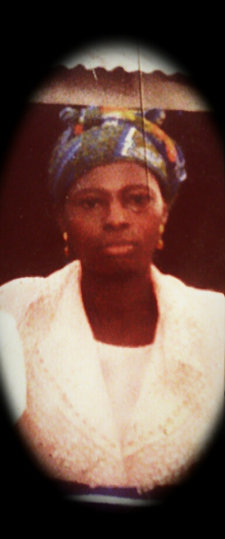
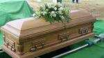

Arise, o compatriots, Nigeria's call obey, To serve our father land, With love and strenght and faith, The labour of ourherose past, Shall never be in vain, To serve with heart and might, One nation bound in freedom, Peace and unity.
Youth obey the clarion call, let us lift our nation high, under the sun or in the rain, with dedication and selflessness, Nigeria is ours nigeria we serve.
I want to start by appreciating God almighty for sustaining me alive up to this extent. secondary, to the Nigerian heron Gen. Yakubu Gawan who concived the ideal of nysc which stands as an indelible mark to the nation. I also appreciate my amiable uncle who supported me in all ramifcations for this dream to come to success.
Nysc is a body that opens the eyes and heart of youths and creats avenue for them to see the glimpse of their destiny. It also shapens the life of nigeria child by injecting the economic ability in their lives.
I proceeded my education at calvin foundation college Naka on the 27th september 2007 and i passed out on the 24th november, 2012
in science department. In the same year in 2012, I got admission at Federal University of Agriculture Makurdi Benue State-Nigeria.
there I read B.SC Industrial Physics I carried out a research work on The Assessment on
Energy Consumption of Fluorecent Lamps over Incandescent Lamp, and i graduated on the 24th april 2017.
Mr.wilfred Asemsa is a man of all people, a visionary, a God fearing man, an indisputeble and indomitable figuer, a vision accelerator and destiny builder was born and brought up in Tse-kpagheR aga saghev/ukusu concil ward gwer/west local government benue state Nigeria. A man that is preserved by God to be a bridge to this family and any soul that accept his dicipline and way of life. He is an educationist who beleive in education for excellence who broke the history years ago as the first graduate in the entire Aga-kurayem which consist of about five clans. He studied sociology in benue state university makurdi benue state.
He is married to mama monica Asema( a business guru ) their marriege is frutfull and productive. they bllessed with eight children namely:asema magret asema christisna asema stella asema peter aseme alfred asema frank asema maurice and asema doowuese
Late Nyikwase catharine Asema who was initialy called Niykwase Tsavhee was later married to my father mr. Daniel Orukusu Asema in the year 1987,the marriage is fruitful and blessed with six children namely: Asema Richard, Asema Isaac (click here to see my details), Asema Grace, Asema Eric, Asema Racheal and Asema Annable.click here to view images. In her marriage, she played her role as a house wife and was dedicated to her civic responsibilities. Religiously, she was a communicant member of N.k.S.T(aka universal regformed christian church).
At the verge of 2011 by october 28 at exactly 8:30 late mama Nyikwase gave up the gost as a result of serious illness between ending of may to 28th october 2011. Her remains was kept at the general hospital Naka Gwer/west local government. On the 11th november 2011 her body was taken to Tse-kpagher, aga-kulayem, saghev/ukusu concil ward Gwer/west local government Benue state-Nigeria, and there she was buried.
Mummy we love you but God loves you most, may your soul rest in perfect peace in Jesus name amen. Go to the top